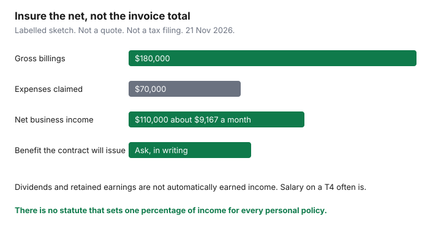

Insurance · Canada
Income Protection for Self-Employed Canadians: Disability Cover When There Is No Group Plan
A freelancer’s income stops when the work stops. There is no group long-term disability booklet, no payroll sick bank, and often no one else who can invoice the client. Households postpone a personal policy until a specialist visit, a new prescription, or a year of thin cash makes the application harder or the benefit smaller. This page is the decision order for self-employed Canadians: size the benefit from net business income, match the elimination period to money you already have, keep business-overhead cover separate from personal income, apply while you can answer the medical questions cleanly, and keep books a claims examiner can read. It is education. It is not a policy, and it is not a promise that any insurer will issue coverage.
Employees who already have a group plan should start with the workplace LTD gaps guide. This page is the primary plan, not a top-up. Employment Insurance special benefits, if you opted in, are a short federal program. They are not own-occupation coverage to age 65.
Disclosure: Education only. Personal disability policies are an offer type some households use when there is no group plan. Saving Optimizer may earn a commission if partner links are added later. We do not currently claim a disability-insurer partnership, and we do not rank products. Dollar figures below were checked against the government pages cited on 21 Nov 2026 and can change. Confirm the contract and the government page before you rely on a number. This is not tax advice.
Key takeaways
- Underwriters and claims examiners start from net business income or from salary your corporation paid you, not from gross billings. A quote built on revenue will not match the claim.
- The elimination period is unpaid by the policy. Size it to cash you can spend, not to the cheapest premium. Self-employed EI sickness, if you registered, is a separate 26-week program with its own earnings test.
- Business overhead expense coverage pays listed office costs for a limited time. Personal disability insurance pays you. They are not substitutes.
- Apply before a diagnosis or a pending investigation, and answer the medical questions completely. A later illness does not rewrite a contract that is already in force. An omission can.
- At a member insurer, Assuris monthly-income protection is the greater of $5,000 a month or 90% if that insurer fails (page used 21 Nov 2026). It does not create a benefit you never bought.
Calculate benefit base from net business income, not gross revenue alone
Open the last two or three T1 returns before you open a quote screen. The line that matters is the one the application asks for. For an unincorporated business that is usually net income from the statement of business or professional activities (Form T2125): gross revenue minus allowable expenses. For a corporation it is often the T4 salary the company paid you. Dividends are a different kind of income. Many disability contracts define earned income in a way that leaves dividends out, or counts only part of them. Ask which definition the application uses, and write the answer on the quote. Do not assume a marketing page that says “a share of your income” means a share of what clients paid you.
| Line | Labelled amount | What an application usually does with it |
|---|---|---|
| Gross revenue | $180,000 | The top of the T2125. Useful as context. A weak base for a monthly benefit, because the expenses are not optional at claim time either. |
| Deductible expenses | $70,000 | Rent, subcontractors, software, professional dues, and the home-office amount you actually claimed. A large capital-cost allowance claim lowers net income for that year. |
| Net business income | $110,000 | The usual starting point for an unincorporated owner. About $9,167 a month before tax. The contract’s percentage applies here, not to $180,000. |
| What the insurer will issue | Ask, in writing | There is no statute that sets one percentage for every personal policy. Insurers cap the total of all disability benefits at a share of earnings so you are not paid more disabled than working. Get that cap on the illustration. |

A loss year or a year you maxed an RRSP deduction does not always change T2125 net income the way people expect, but it does change taxable income and sometimes the story you tell an underwriter. If the business is new, many insurers will not issue a benefit on a projection. They wait for a filed return, or they issue a smaller amount you can increase later with financial evidence. That increase option is only useful if the contract actually offers it and you are still insurable when you ask.
Incorporated owners should separate three numbers: salary on the T4, dividends on the T5, and retained earnings left in the company. Retained earnings are not a paycheque. A policy sized to last year’s dividends can be declined, reduced, or argued at claim if the definition says “earned income” and the tax slip says “eligible dividend.” The person who prepares the T2 can tell you what was salary. The insurer’s illustration should name the same figure. If you later cut salary to zero and live on dividends, tell the insurer before a claim, not after. Some contracts let you keep a benefit based on prior earned income for a stated period. Some do not.
Canada Pension Plan disability can offset a personal policy if you qualify and the contract says so. For a new CPP disability benefit beginning in 2026, Employment and Social Development Canada publishes a maximum of $1,741.20 a month. Self-employed people who contribute can qualify. The average award is lower, and Québec uses the Quebec Pension Plan, not that CPP maximum. Read the offset clause. A contract that deducts “any government benefit you are eligible to receive” can reduce the cheque even before the pension is approved, if you do not apply when asked.
Elimination period vs emergency fund runway for freelancers
The elimination period is the number of days you must be disabled before the policy pays. Thirty, sixty, ninety, one hundred twenty, and one hundred eighty days are common product choices. They are not a national menu. A longer wait has a lower premium because the insurer pays fewer short claims. It is only a saving if the household can fund those days from cash, a spouse’s pay, or a program you have already qualified for.
| Elimination period | Unpaid stretch, roughly | Cash test |
|---|---|---|
| 30 days | About one month after you meet the definition | Fits a thin reserve. Costs more. Still not day one: invoices in transit are not the same as a benefit payment. |
| 90 days | About three months | A common balance. Requires a named cash bucket, not a hope that clients will keep paying retainers. |
| 180 days | About six months | Only if the emergency fund, a spouse’s income, or a real short-term plan covers the gap. A lower premium that outlasts the savings account is not cheaper. |
Employment Insurance special benefits for self-employed people are optional. Service Canada’s eligibility page, updated 31 Dec 2025, says you must have an agreement with the Canada Employment Insurance Commission for at least 12 months, and you must have earned at least $9,254 in net self-employed earnings in 2025. You also have to cut the time spent on the business by more than 40 percent. The benefits page for self-employed people says sickness benefits can run up to 26 weeks, at 55 percent of earnings, to a maximum of $729 a week in 2026. That is a useful bridge for someone who registered a year ago. It is not disability insurance. It does not use an own-occupation test to age 65, it ends in months, and it pays nothing if you never opted in. Québec residents who register are generally looking at EI sickness, compassionate care, and family caregiver benefits, because maternity, paternity, and parental benefits sit with the Québec Parental Insurance Plan. Confirm the current week maximum on the Service Canada page before you put $729 in a budget.
Do not buy a 180-day wait because the premium looks thrifty, then plan to “figure out cash later.” The elimination period is the plan for those months. If the cash is not there, shorten the wait or fund the bucket first.
Partial disability wording matters for freelancers who can still take a small job. A residual benefit pays based on the income you lost, often after a total-disability period the contract specifies. A contract that pays only if you do no work at all forces a bad choice: a small invoice can knock out the whole claim. Read the partial and residual clauses before you compare premiums. The annual insurance review is a reasonable place to re-check the waiting period when the emergency fund changes.
Business overhead expense riders vs personal DI
Personal disability insurance replaces your pay. Business overhead expense insurance (often called BOE) reimburses listed fixed costs of the practice while you cannot work: rent, utilities, employee wages, dues, and sometimes loan payments the contract names. It does not buy groceries or pay the household mortgage, unless those costs are somehow a listed business expense, which a personal residence usually is not. A rider stapled to a personal policy can still be a different benefit with its own period, often measured in months rather than to age 65. Read the period. A 12- or 24-month overhead benefit is a product pattern households see. It is not a rule, and it is not income.
- Who should look at overhead cover. An owner with rent, staff, or a lease that continues if they are in hospital. A solo consultant working from a kitchen table often has little to insure except software and a phone. Overhead cover on a near-zero fixed cost is a premium for a claim that will not be large.
- Who should not treat it as income. Anyone who would spend the overhead cheque on personal bills. The contract pays receipts, or it pays a monthly maximum against receipts. It is not a second salary.
- Partnerships and clinics. A buy-sell disability agreement is a third contract: it funds a purchase of your share if you cannot return. It is not BOE and not personal DI. Do not assume the clinic’s policy pays your household.
- Tax treatment. Whether a premium is deductible, and whether a benefit is taxable, depends on who pays and what the policy does. That is a question for the person who files the return. Do not take a quote screen as a tax opinion.
If you have employees, workers’ compensation may cover their work injuries. It does not replace your drawings because you had a non-work illness. A client’s workplace plan does not cover you because you billed them. Contractors on a site should ask, in writing, whether the client’s board covers them. Silence is not coverage.
Medical underwriting timing: buy while healthy, before a diagnosis
Personal disability insurance is underwritten on your health, occupation, and income at the time you apply. Group plans often accept you because you are an employee. There is no parallel guarantee for a sole proprietor. The practical window is while you can complete the medical questions without a new diagnosis, a new investigation, or a specialist referral sitting in your inbox.
Answer what is true. Applications ask about symptoms, tests, prescriptions, time off work, and pending appointments. “I will mention it if they ask in person” is how claims get refused years later for misrepresentation. If a test is booked, the honest answer is that a test is booked. The insurer may postpone, exclude a condition, charge a higher premium, or decline. Any of those results is a better outcome than a policy that looks cheap and then fails when you claim.
Once a contract is in force, a later illness is what you bought the policy for, subject to the wording: pre-existing limitations, contestability periods, and the definition of disability. “Non-cancellable” and “guaranteed renewable” are different promises about whether the insurer can change premiums or walk away. Match the words on the specimen contract, not the brochure headline. A future group plan, if you take a job, should be disclosed. You may be able to reduce the personal benefit so you are not paying twice for the same slice of income. Hiding the group plan can shrink the personal cheque at claim time under an over-insurance clause.
Critical illness insurance, which pays a lump sum on a listed diagnosis, is a different product. It does not deposit a monthly income. It can sit beside a disability policy. It does not replace one. The Financial Consumer Agency of Canada’s disability insurance page is the plain-language map of waiting periods, benefit periods, and definitions. Your contract is still the document that pays.
Document income carefully—claims fail on thin bookkeeping
The application’s income figure and the claim’s income proof have to be the same story. Examiners ask for tax slips because those slips were filed with the Canada Revenue Agency, not because they enjoy paperwork. A folder that will survive a claim usually holds:
- The T1 and notice of assessment for each year the contract uses to define pre-disability earnings. Ask which years. “The best of the last three” and “an average of the last 24 months” are both sold. Only the contract’s sentence counts.
- Form T2125, or the corporate T4 and T5, plus financial statements if you have them. Gross deposits in a chequing account are not a substitute when they mix HST, reimbursed expenses, and a spouse’s transfers.
- HST/GST returns if the business is registered, so revenue can be reconciled. Mismatched totals create delays, not a larger benefit.
- A short description of the work you actually do, with contracts or engagement letters. Own-occupation claims turn on duties. “Consultant” is not a duty. “I draft structural drawings and visit sites twice a week” is.
- If the claim is partial, a record of invoices before and after the disability, and a note from the treating practitioner that ties the drop to the condition. A client who left for an unrelated reason is not a disability loss.
Keep the folder as you go, not in the week you cannot work. A year of cash deposits with no return is a hard claim, and it is also a hard application. If a preparer files an adjustment that lowers net income after the policy is issued, the claim calculation follows the contract’s definition of earnings, which may look through to the corrected figure. Ask. Do not assume the original illustration is locked to a number CRA later changed.
Layer with EHCP/HSA and emergency cash so DI is not your only tool
Disability insurance does one job: monthly income if you meet the definition. It does not pay the dentist, the physiotherapy clinic, or the prescription the provincial plan leaves out. Split the tools on purpose.
- Emergency cash covers the elimination period, the deductible on a health claim, and any exclusion the disability contract carved out. Name the account. A line of credit is a backstop with interest, not the same as cash.
- Personal disability insurance covers the income gap after that wait, for the benefit period you bought, usually aimed at the years until you would have stopped working. Coordinate it with CPP or QPP disability if the contract offsets them.
- An extended health care plan or a Canadian health spending account covers eligible medical expenses the province does not. A Canadian health spending account, when it qualifies, is a private health services plan. It is not a U.S. health savings account, and it is not income replacement. The health and dental gap guide is that decision, including the tax caveat.
- Life insurance covers a death, not a disability that lasts thirty years. The needs worksheet is a separate number. Do not shrink it to pay for disability premiums without writing down which month you left uninsured.
Premiums you pay personally for disability insurance are generally not a business deduction, and the benefit is generally received tax-free. A corporation that pays the premium can change that result. Confirm with the filer before you route the premium through the company to “make it deductible.” A taxable benefit that looked cheaper at issue can be the more expensive cheque after a long claim. Assuris protects a monthly income benefit at a member life and health insurer for the greater of $5,000 a month or 90 percent if that company fails. That is failure protection for a policy you already hold. It is not a reason to skip the income calculation above.
Sources & date stamps
- Service Canada, self-employed benefits, who can qualify — agreement active at least 12 months; minimum $9,254 net self-employed earnings in 2025; time on the business reduced by more than 40 percent. Page details 31 Dec 2025. Used 21 Nov 2026.
- Service Canada, benefits for self-employed people — sickness benefits up to 26 weeks; 55 percent of earnings to a maximum of $729 a week in 2026. Used 21 Nov 2026.
- Employment and Social Development Canada, CPP disability benefit amount — 2026 maximum $1,741.20 a month for a new benefit. Québec uses QPP. Used 21 Nov 2026.
- Financial Consumer Agency of Canada, disability insurance — consumer map of waiting periods, benefit periods, and definitions. The contract controls. Used 21 Nov 2026.
- Assuris, how am I protected — monthly income protection is the greater of $5,000 a month or 90 percent. Used 21 Nov 2026.
Frequently asked questions
Can I insure my gross billings?
Usually no. Applications and claims start from net business income on the T2125, or from salary a corporation paid you. Dividends often fall outside the contract’s definition of earned income. Ask which line the illustration used before you compare premiums.
Is self-employed EI sickness the same as disability insurance?
No. If you opted in at least 12 months earlier and you meet the earnings and hours tests, sickness benefits can pay up to 26 weeks, at 55 percent of earnings to a 2026 maximum of $729 a week. A personal disability policy is a contract about your occupation and a benefit period you choose. One does not cancel the need to read the other.
Does business overhead coverage pay my mortgage?
It pays listed business expenses, up to the maximum and the period in the contract. A personal mortgage and groceries belong on the personal disability policy, or in cash, unless the contract clearly lists them. Most do not.
Are personal disability benefits taxable?
When you pay the premium yourself with after-tax dollars, the benefit is generally not taxable. When a corporation pays, the tax result can change. Confirm with the person who files your return. This page is not tax advice.
Is this insurance advice?
No. Education only. Personal disability policies are an offer type. We do not claim a partnership with any insurer. The contract, the tax slips, and the government pages control.